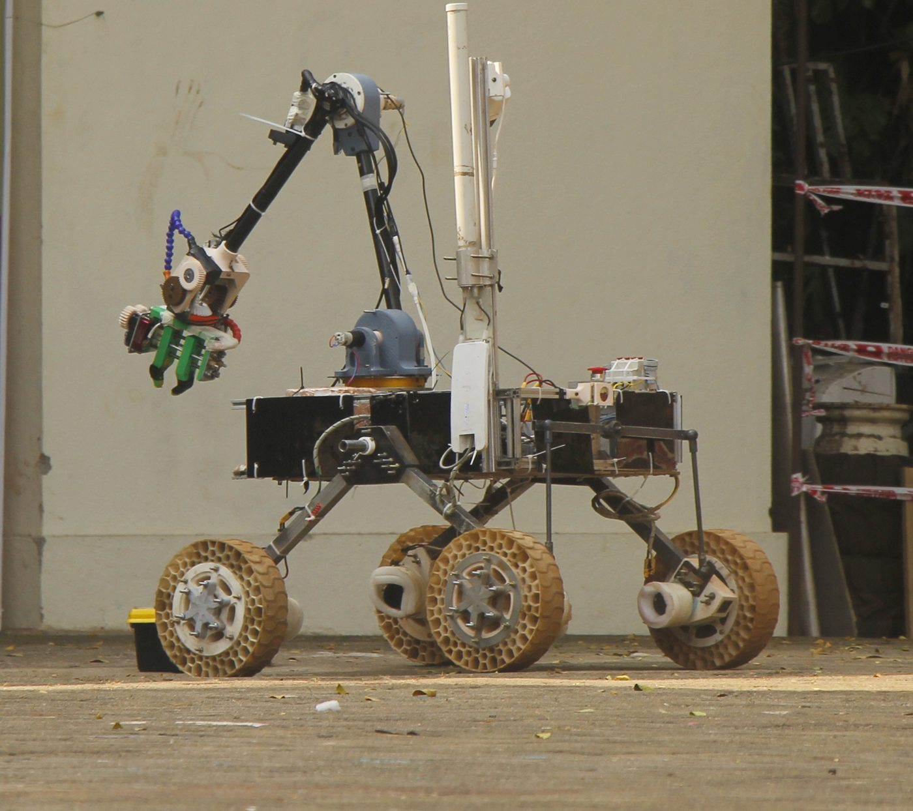
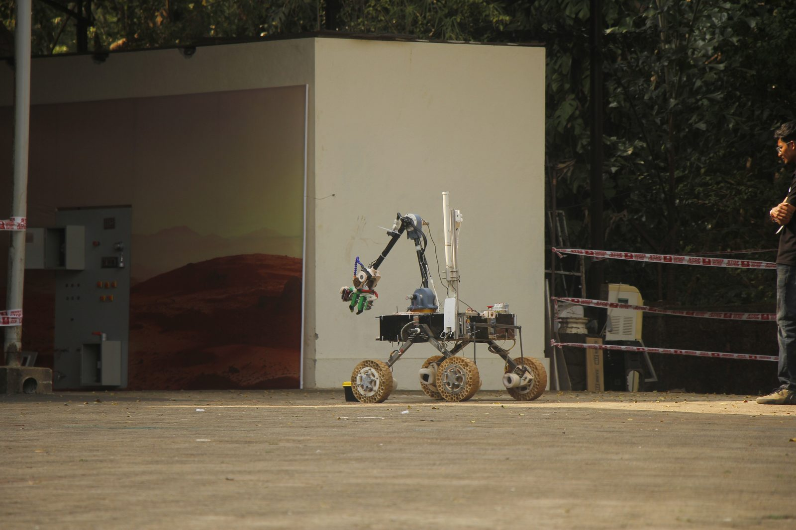
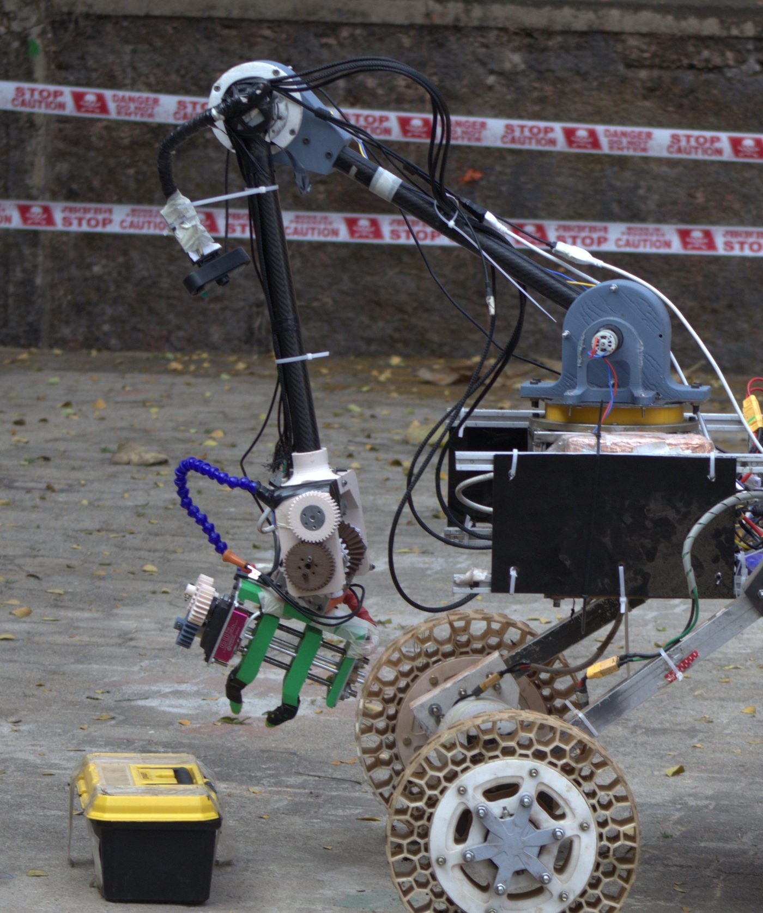

Team Robocon IITR
Team Robocon IITR builds a Mars rover for the International Rover Challenge and the European Rover Challenge. I designed parts of its mobility system and science payload, and as Mechanical Lead I now own the rover’s overall mechanical architecture.
6wheels
15 cmsoil dig depth
Rank 2IRC 2026 arm task
Top 10ERC 2025
Mobility
- Team’s modified mantis suspension, a 6-wheel rocker-bogie-style design that keeps every wheel on the ground over rough terrain, backed by load-distribution analysis
- Deformable TPU honeycomb wheels that flex over rocks and improve traction on loose, Martian-analog soil
Science Payload
- Auger-based soil sampler on a parallel-linkage mechanism driven by linear actuators, keeping the auger vertical down to 15 cm depth
- Anti-contamination sample-drop mechanism that feeds soil into an onboard colorimetric analysis unit for life detection
Leadership
Leading the 40+ member mechanical division: rover architecture, subsystem design reviews and fabrication planning.
Skills & Tools
Suspension design, load analysis, sampling mechanisms, TPU printing, SolidWorks
Gallery


